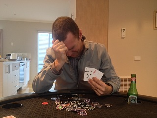
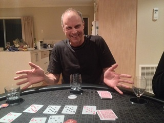
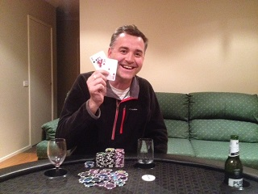

.....The famous five slum it in Rye
| Date | Location | Game | Players |
|---|---|---|---|
| {{tournaments.tournamentOne[0].eventDate}} | {{tournaments.tournamentOne[0].location}} | {{tournaments.tournamentOne[0].tournament}} | {{tournaments.tournamentOne[0].noOfPlayers}} |
| Date | Location | Game | Players |
|---|---|---|---|
| {{tournaments.tournamentTwo[0].eventDate}} | {{tournaments.tournamentTwo[0].location}} | {{tournaments.tournamentTwo[0].tournament}} | {{tournaments.tournamentTwo[0].noOfPlayers}} |
| Position | Name | Points | Won |
|---|---|---|---|
| {{result.position}}{{positionSuffix(result.position)}} | {{result.name}} | {{result.points}} | {{result.cash | currency}} |
| Bounty Winner |
|---|
| Steve W |
| Position | Name | Points | Won |
|---|---|---|---|
| {{result.position}}{{positionSuffix(result.position)}} | {{result.name}} | {{result.points}} | {{result.cash | currency}} |
| Bounty Winner |
|---|
| Dave M |
| Position | Name | Played | Won | Win Ratio | Ave Points | Ave Position | Points |
|---|---|---|---|---|---|---|---|
| {{$index + 1}}{{positionSuffix($index + 1)}} | {{result.name}} | {{result.played}} | {{result.won}} | {{result.won / result.played * 100| number:2}} % | {{result.points / result.played | number:2}} | {{result.averagePosition | number:2}} | {{result.points}} |
|  |
| Ben struggles to contain his emotions after finally winning. |
The fifth poker tournament was held off-site from "The Square" as five players ventured towards the southern shores to take up Dave's kind offer at hosting at his beach house. The overly keen "Ice man" Brian was first to turn up (with ice) and as the car port filled up quickly, players soon focused their attentions on the long day ahead.
Plenty of beers into the ice bucket, red wines stored, doona's and pillows readied for later allocation, but no sign of Donna? The return of the ol' favourite 8 seater table was eagerly set-up whilst Dave supplied everyone with a cold one, allowing players to ready for the marathon poker session ahead.
The first deal initiated the proceedings and betting in the first few hands was noticeably tentative as people eased their way into the game. Very few raised bets and lots of checking kept wins at a moderate level. Paul and Brian were wondering when they were going to win a hand, but Dave was already running hot as he took lots of small pots to create monster $5 and $10 chip towers.
Into the second hour, things were starting to heat up and Ben pushed Steve off on two hands with strong bets to give him a healthy chip level. Maybe the alcohol was starting to loosen players games up as the pots were starting to increase and Dave's previously won towers were leaving for pastures new.
Returning from the second break with blinds up to $100/$200, Ben was the clear chip leader. Steve's professional dealing style saw him deal out the flop without giving anyone any cards, but maybe it was a clever distraction guise as he soon won several hands to close in on Ben's chip amount. Brian was relieved to see pocket K's and pushed in a strong $2000 bet that saw Ben fold and Steve deliberate for a few minutes. With the famous words "Oh, why the F&$% not", Steve pushed in some of his winnings. With two 3's on the board causing Brian some anxiety, he was relieved to see his hand hold, and even more relieved when Ben piped up that he had folded pocket 3's!
Dave's luck seemed to have run out and he soon found himself the first casualty and was allocated the BBQ duty. Paul was struggling to find any decent cards to play and was forced to go all in, and with the rollover bounty prize at stake, Brian and Ben didn't think their hole cards were good enough. Steve though, with dollar signs in his eyes took on the job and summarily dismissed Paul like a Roman Gladiator taking on a helpless slave. Brian, Steve and (yep, him again) Ben were left to fight out the bonus points but Steve's stack soon took more of a pounding than GWS playing the Hawks, and maybe with some chagrin, Paul was not dealing Steve any good cards leaving Steve with no option but to go all in, but not hitting the board and finishing in third place.
With chip stacks at comparable levels, no deals were to be struck with Brian and Ben hoping for that final slice of luck to get over the line. With Ben taking a large amount of Brian's chips after calling a semi-bluff, it led to the final hand with Brian holding AQ and Ben A7. A slight dealer mishap exposed the first burn card, which was a seven, so Brian was smiling knowing that it was the card that Ben wanted. The smile soon vanished though as the first flop card was another seven, and with the final river card turning over yet another seven, Ben took in all the chips. Finally his first win after so many close attempts, and with congratulations and back pats a-plenty, everyone turned their attention to dissect the previous game accompanied with the gastronomic feast served up by Dave (unless you're a vegetarian).
Players ventured back to the table with stomach cavities brimming with vitamin B12. Brian was sporting a poker injury above his left eye after having an argument with the bathroom sink, but fortunately the anaesthetic level of inebriation meant game two could commence without the need for medical assistance. Another tentative start for the first few hands before Ben upped the betting levels by betting the flop, turn and river. His bets were matched, and was forced to show down two cards that did not hit anything.
Steve was now getting some good starting cards, but was looking to the heavens for a change of luck as his raise simply meant the rest of the players folded. Even when he did manage to win a hand at showdown after the river card, for the fourth time of the night, his best cards were matched by another player and the pot was split. Meanwhile, Dave was wondering whether he'd done something wrong in a previous life, as his top cards were beaten by other players with better kicker cards on multiple occasions.
|  |
| Quad 8's - Paul's new lucky number! |
Brian received a nice chip up, after his Jack matched the two Jacks on the flop, but Paul not believing him, called the bets all the way and was forced to relinquish chips a-plenty as a result. It was all forgotten a few hands later though, as Ben's imperious betting was snap called by Paul. Ben was confident of more chips as his full house was surely the best hand, until Paul turned over the best hand of the night - Quad Eights. Ben didn't know whether to laugh or cry, but was good natured to accept the loss gracefully, whilst muttering expletives under his breath.
It wasn't long before Ben decided to re-buy and Steve also down on chips joined in the prize fund enlargement process. A few hands later Brian's aggressive bet was followed by 3 folds, but Steve decided to come along for the ride. Brian with top pair put the pressure on Steve who was chasing a flush, and with Steve all in, his despairing look epitomised his luck as he was out in fifth place.
Into the latter stages of the game, players judgements were heavily influenced by the level of intoxication. Brian (on a flush draw), pushed in a massive $5000 bet that gave Dave's neural activity a good work out. Announcing words closely matching Steve's in the first game, the bet was called with Dave having top pair. This time though, no flush completion (that's not an observation of toilet activity!), knocked Brian out in fourth place. Dave's table vicinity was now brimming with chips with Dave experiencing his first foray into the top three.
Paul also didn't last much longer as his single story chip stack was being overwhelmed by the neighbouring high-rise efforts of Ben and Dave. And unsurprisingly, he could not hold out, leaving Dave now into the top two against the all conquering Ben. With Steve taking on the dealing capacity whilst Brian kept tabs on the chips, the hands were being played fast and furiously. Even a quick stop gap after accident prone Brian provided a broken wine glass for clearing, did not stop Ben and Dave's concentration.
|  |
| 8 hours of poker later - Exhausted Dave enjoying the moment.... |
Ben was hoping that his newly found first place experience would see him through, but Dave had other ideas and managed to creep into the chip leader position meaning an all in from Ben, could put him close to the exit position. Steve's dealing fortuitously gave Dave a chance to get his chips into the middle and pushed all in with AK. Ben who knew he had to win back the chips called, and as so often been the case, watched as the first place slipped through his fingers and he returned to the familiar surroundings of runner up spot. Dave's exhausted sigh of relief soon turned to smiles after a massive second game and also meant his first win after seven attempts.
Table update: Yep, the main man Ben keeps up his unstoppable progress at the summit of the ladder, with a 22 point gap to Paul who stays in second. Brian moves up to third (as Mark V could not play), and bridges the gap slightly to Paul. Both Steve and Dave move up a place at the expense of Jade and Mark L respectively who also could not join in the shenanigans.
So the marathon 8 hours of double header poker was completed with two players getting wins for the first time (It has to be Steve's turn next time!). Many, many thanks to Dave for the invite, steak cooking skills and general hospitality, but apologies to the neighbours who will need to wear ear plugs when the recycle bin is emptied.
Room allocation was based upon the results of the night for everyone bar host Dave, so Steve was provided the blow up mattress in the living area whilst the other players gratefully retired for the night into other bedrooms. The morning turned up some sorry looking players, but again the hospitality of Dave providing breakfast and morning papers eased the hangovers. It did give Brian one more opportunity to wreak havoc with Steve's cup of tea utilising gravity to head towards the floor, but at least it meant the floors were mopped. Cars were loaded ready for the return, but not before 4 of the players headed off for another battle, but this time on the golf course...And that as they say, is a another story....
Event VI.....Can it get any better?